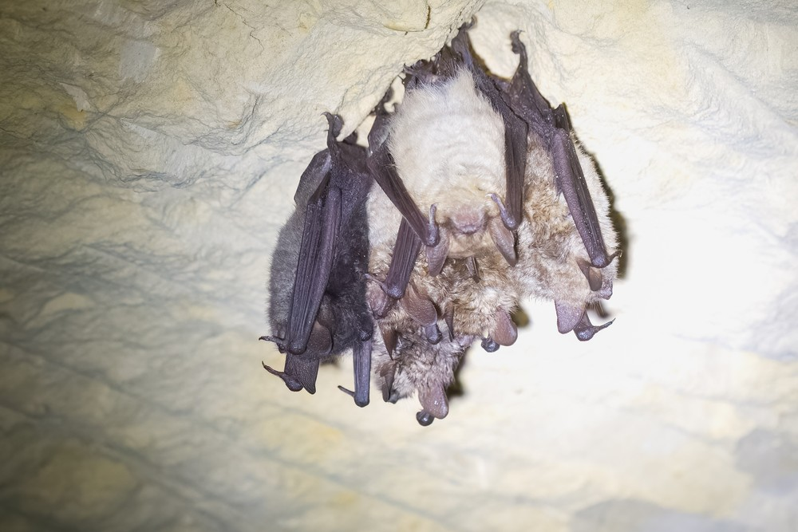
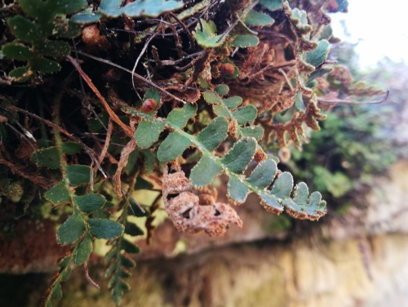
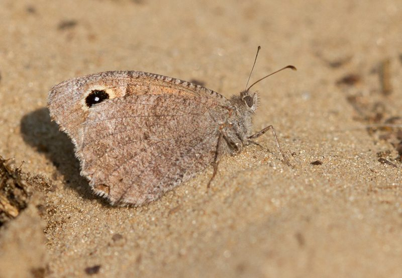
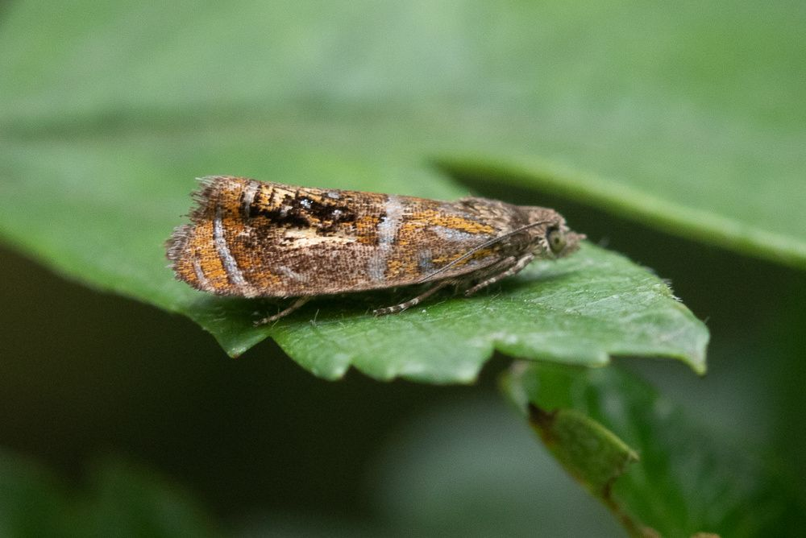
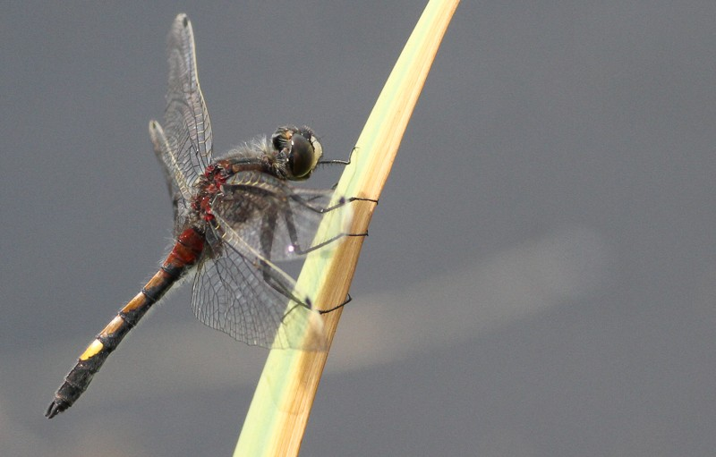
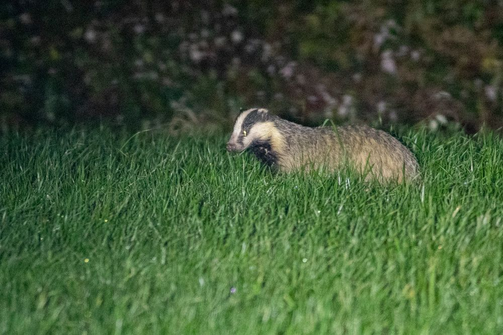
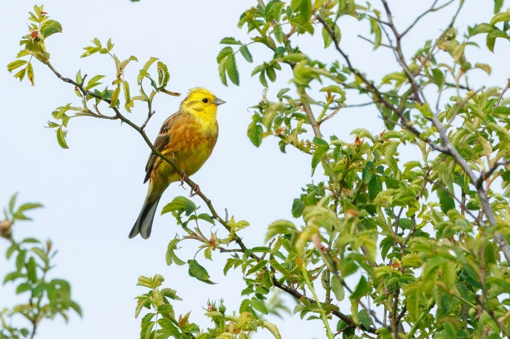

Na de quickscan
Soortgericht onderzoek
Wijst een quickscan uit dat beschermde soorten mogelijk aanwezig zijn, dan is soortgericht onderzoek nodig, ook wel aanvullend onderzoek genoemd. Wij voeren dit uit volgens de geldende protocollen, helder en zonder ingewikkeld jargon.
Direct aanvragenWelk onderzoek past bij uw situatie?
Aanvullend onderzoek is altijd gericht op de soortgroep die uit de quickscan naar voren komt. Dit zijn de onderzoeken die wij uitvoeren.

Vleermuisonderzoek
Spouwmuren, dakconstructies en kieren als verblijfplaats. Meerdere veldbezoeken met batdetectoren.
Lees meer
Huismusonderzoek
Nesten onder dakpannen en in kieren. Gerichte veldbezoeken overdag met observaties.
Lees meer
Gierzwaluwonderzoek
Nesten onder dakranden en in ventilatieopeningen. Observaties in de avondschemering.
Lees meer
Amfibieën- en reptielenonderzoek
Beschermde amfibieën en reptielen in en rond het plangebied. Gerichte inventarisatie per soortgroep.
Lees meer
Beschermde planten
Juridisch beschermde vaatplanten in het plangebied. Inventarisatie tijdens het groeiseizoen.
Lees meer
Dagvlinderonderzoek
Beschermde dagvlinders zoals pimpernelblauwtje en donker pimpernelblauwtje.
Lees meer
Nachtvlinderonderzoek
Inventarisatie van beschermde nachtvlindersoorten met lichtvallen en feromoonvallen.
Lees meer
Libellenonderzoek
Gevlekte witsnuitlibel, groene glazenmaker en andere beschermde libellensoorten.
Lees meer
Grondgebonden zoogdieren en marters
Cameraval- en sporenonderzoek naar steenmarter, boommarter, das, eekhoorn en andere zoogdieren.
Lees meer
Broedvogelonderzoek
Steenuil, buizerd, roek, bosuil en andere broedvogels met jaarrond beschermde nesten.
Lees meerWanneer kan het onderzoek plaatsvinden?
Aanvullend onderzoek is seizoensgebonden. Houd hier rekening mee in uw planning, want een gemist seizoen betekent een jaar wachten.
Vleermuizen
Mei tot oktoberMinimaal 4 veldbezoeken in de avond en nacht.
Huismus
April tot juniTwee of drie veldbezoeken overdag, minimaal een uur per bezoek.
Gierzwaluw
Juni tot juliMinimaal drie veldbezoeken rond zonsondergang.
Jaarrond beschermde nesten
Winter en voorjaarGrote nesten zijn het best te vinden in de bladloze periode, territoria in het broedseizoen.
Kleine marterachtigen
Juni tot half novemberCameraonderzoek over een aaneengesloten periode. Half november tot mei is ongeschikt.
Mis het seizoen niet
Is het onderzoeksseizoen voorbij, dan moet u vaak een jaar wachten tot het volgende seizoen. Begin daarom op tijd met de quickscan, zodat eventueel aanvullend onderzoek nog in hetzelfde jaar kan plaatsvinden. Bij twijfel over de planning denken wij graag met u mee.
Veelgestelde vragen
Wanneer is een flora- en faunaonderzoek nodig?
Zodra uw plan beschermde soorten kan raken en de quickscan hun aanwezigheid niet kan uitsluiten. De quickscan is daarmee de stap die bepaalt óf er soortgericht onderzoek volgt, en die kan het hele jaar door. Het soortgerichte onderzoek zelf is wel aan een seizoen gebonden, dus het moment waarop u de quickscan laat doen bepaalt of u dit jaar of pas volgend jaar verder kunt.
Wanneer moet ik welk onderzoek laten uitvoeren?
Elke soortgroep heeft een eigen onderzoeksperiode. Gebouwbewonende vleermuissoorten onderzoeken wij tussen mei en oktober, huismus in het voorjaar, gierzwaluw in juni en juli, en kleine marterachtigen van juni tot half november. Grote nesten van roofvogels en uilen zijn juist in de bladloze periode het best in kaart te brengen, wat een winterproject soms uit de wachtstand haalt. Welke combinatie voor uw plan geldt, volgt uit de quickscan.
Uit mijn quickscan blijkt dat vleermuizen niet zijn uit te sluiten. Wat nu?
Dan is aanvullend vleermuisonderzoek nodig volgens het Vleermuisprotocol: meerdere veldbezoeken tussen mei en oktober, op momenten dat vleermuizen actief zijn. Het onderzoek brengt in kaart welke soorten en verblijfsfuncties aanwezig zijn. Op basis daarvan bepalen we of en welke maatregelen nodig zijn. Lees ook wanneer vleermuisonderzoek verplicht is.
Hoe lang duurt een compleet traject?
Van offerte tot eindrapport gemiddeld vier tot acht weken, afhankelijk van het seizoen en de soort. De veldbezoeken zelf zijn gebonden aan de onderzoeksperiode van de betreffende soort.
Wat als ik het seizoen mis?
Dan moet u wachten tot het volgende jaar, want de veldbezoeken zijn alleen zinvol als de soorten actief zijn. Daarom adviseren we de quickscan vóór april te laten uitvoeren, zodat er tijd overblijft voor eventueel aanvullend onderzoek in hetzelfde seizoen.
En als er echt beschermde soorten aanwezig blijken?
Als negatieve effecten niet te voorkomen zijn, is een omgevingsvergunning voor een flora- en fauna-activiteit (ffa) nodig. Wij adviseren u hier helder over en kunnen u begeleiden bij de aanvraag. Vaak volstaat ook een ecologisch werkprotocol om zorgvuldig te kunnen werken.
Voert u het veldwerk zelf uit?
Ja. Wouter van der Ham voert het veldwerk persoonlijk uit. U hebt direct contact met de ecoloog die bij u langskomt. Is er specialistische kennis nodig die buiten onze expertise valt, dan schakelen we in overleg een geschikte collega-ecoloog in.
Aanvullend onderzoek aanvragen
Vul in wat u van plan bent en waar. Hoe vollediger het beeld, hoe gerichter ons voorstel. Wij reageren binnen 24 uur met een vrijblijvende offerte of met een vraag als er nog iets ontbreekt.
Liever niet via een formulier? Mail ons op info@vanderhamecologie.nl, of stel eerst uw vraag via de contactpagina.